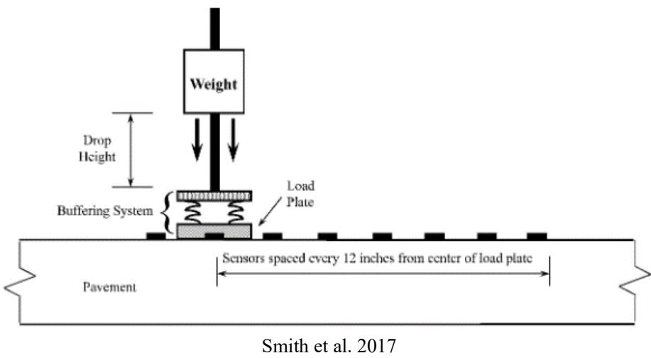
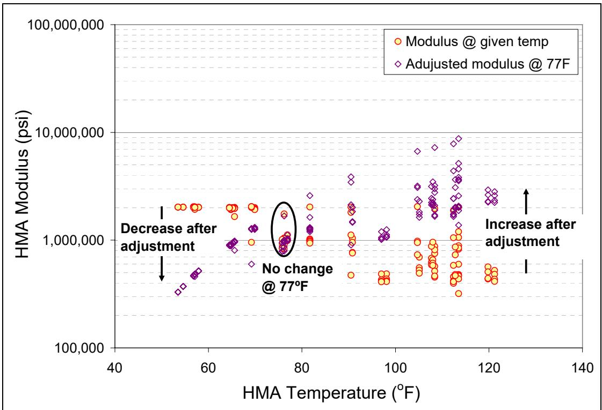
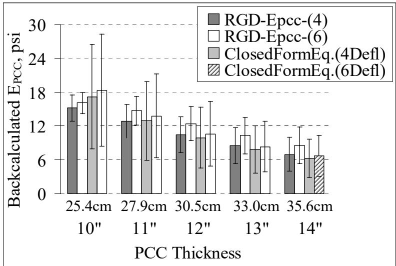

Falling Weight Deflectometer
The Falling Weight Deflectometer is a nondestructive testing device that evaluates pavement structural condition by applying dynamic impulse loads to simulate traffic effects and measuring the resulting vertical surface deflections. By capturing the spatial distribution of deformation known as the deflection basin, the equipment provides essential data for assessing layer stiffness and integrity without damaging the infrastructure [1] [2] [3]. These measured deflection patterns serve as fundamental inputs for inverse engineering techniques that infer the mechanical properties of underlying layers by matching observed responses to theoretical structural models [1] [2] [3]. The analysis of these dynamic responses allows engineers to determine critical parameters such as layer moduli and subgrade support, which are necessary for assessing remaining structural life and designing maintenance strategies [1] [4].
CP Tech Center reports covering “Falling Weight Deflectometer” also include the following subtopics: Backcalculation.
Falling Weight Deflectometer testing evaluates pavement structural integrity through dynamic load response analysis. Backcalculation transforms transient deflection basin measurements into precise layer moduli by iteratively adjusting structural model parameters until predicted surface responses match the observed FWD data.
Sources (15)
Sub-concepts (1)
Fundamentals
Falling Weight Deflectometer testing provides a non-destructive means of measuring surface deflections under transient loading, which serves as the primary data source for evaluating structural performance and load transfer efficiency in pavement systems [5]. The mechanical response captured by these measurements is fundamentally governed by beam-on-elastic-foundation principles, where the interaction between structural elements and their supporting medium determines deflection patterns and stress distribution [6] [7]. Inverse engineering techniques utilize these measured deflections to backcalculate layer properties, allowing engineers to infer stiffness and subgrade reaction parameters that characterize the pavement’s structural integrity without direct physical sampling [5].
The following figure illustrates a typical Falling Weight Deflectometer test setup.

Illustration of a typical FWD test setup [5]The figure depicts the mechanical components of a Falling Weight Deflectometer, featuring a suspended weight that drops onto a load plate to apply an impulse force. A buffering system is positioned between the falling mass and the pavement contact point to manage the impact dynamics. Sensors are arranged in a linear array along the pavement surface at varying distances from the center of the load plate to capture the resulting deflection basin.
Key findings
- Showed that composite pavement behavior varies significantly based on interface conditions, where unbonded layers exhibit substantially higher deflections and stresses compared to fully bonded configurations under static loading [8] [5].
- Demonstrated that FWD testing is a critical input for determining overlay depth and validating structural models, with specific protocols requiring measurements at 0.2-mile intervals in the outer wheel path using sensors placed between surface cracks rather than across them [8].
- Revealed that FWD-derived k0 values can significantly exceed those obtained from laboratory tests, highlighting discrepancies in boundary condition modeling between field and lab environments [7].
- Established that adequate load transfer is maintained in ultrathin portland cement concrete overlays on brick streets when deflection values remain at or above 70%, with observed performance consistently exceeding this threshold across various slab sizes and time periods [9].
- Indicated that while traditional backcalculation methods often rely on linear elastic assumptions that fail to capture the nonlinear stress-dependent behavior of geomaterials, advanced approaches using Artificial Neural Networks demonstrate the capability to rapidly predict layer moduli and critical responses with high accuracy [1].
- Measured that uncracked high-performance concrete sections exhibit slightly less deflection at joints than standard concrete, indicating reduced curvature and better support retention under load transfer devices [10].
- Observed that nearly all of the deflection measured before overlay placement was eliminated during construction, confirming the effectiveness of FWD testing in verifying overlay design depth adequacy [11].
- Determined that FWD-derived composite moduli are consistently lower than those estimated from Dynamic Cone Penetrometer tests because FWD data inherently accounts for existing loss of support beneath the pavement, whereas DCP-based estimates ignore in situ voids or erosion [4].
FWD Methodology and Application Scope
Evidence: 14 reports (12 primary)
The Falling Weight Deflectometer is a nondestructive testing device that evaluates pavement structural condition by applying an impulse load to the surface and measuring the resulting dynamic deflection basin [1]. This equipment captures the deformation profile across the pavement layers, providing essential data for assessing stiffness and integrity without damaging the structure [3]. The measured deflection patterns are fundamental inputs for backcalculation techniques, which infer the mechanical properties of underlying layers by matching observed responses to theoretical models [3].
The following figure illustrates a typical example of this equipment in use.
 Iowa DOT’s JILS-20 FWD equipment [3]
Iowa DOT’s JILS-20 FWD equipment [3]
The image displays a white, trailer-mounted apparatus labeled “Iowa Department of Transportation” and “JILS-20,” which is identified as Falling Weight Deflectometer (FWD) equipment. The FWD test is conducted by applying dynamic impulse loads to the pavement surface, similar in magnitude and duration to that of a single, heavy, moving wheel load.
Research problem — Traditional FWD testing is limited to discrete, stationary setups that are operationally constrained by time, cost, and safety risks, creating a critical need for high-speed, continuous measurement technologies capable of efficient network-level data collection [2] [12]. Standard backcalculation techniques are often cumbersome and computationally intensive, while the non-uniqueness of solutions makes results highly sensitive to initial seed moduli and lacks standardized validation across different jurisdictions [1] [3]. There is a significant gap in accurately calculating specific structural parameters like dowel support modulus because test loads are often insufficient to generate measurable relative deflections of adequate magnitude [7].
State of the art — The Falling Weight Deflectometer is established as the standard nondestructive testing tool for evaluating pavement structural condition, primarily through backcalculation of layer properties and assessment of joint load transfer efficiency [1] [4] [3]. Current analysis practices are shifting from traditional iterative finite element methods toward computational intelligence systems like Artificial Neural Networks to overcome the trade-offs between computation time and accuracy while eliminating sensitivity to initial seed moduli [1] [3]. To address operational limitations in busy traffic environments, the field is actively developing high-speed mobile systems such as rolling wheel deflectometers to enable continuous network-level data collection that complements discrete stationary testing [2] [12].
The figure below illustrates the application of these computational intelligence systems through ILLI-PAVE-based ANN backcalculation models for flexible pavements.
 ILLI-PAVE-based ANN backcalculation models for flexible pavements [1]
ILLI-PAVE-based ANN backcalculation models for flexible pavements [1]
The figure displays a hierarchical classification of pavement analysis models organized by structural type and loading conditions. These models serve as the theoretical structural response predictions required for backcalculation, a process where measured deflections are matched to infer layer stiffness properties.
Findings from the reports
- Showed that bonding between concrete and asphalt layers significantly enhances joint load transfer efficiency and structural capacity, as evidenced by lower deflections and higher LTE in bonded or naturally adhering overlays compared to deliberately debonded systems [5].
- Found that FWD-derived resilient modulus measurements for subgrade layers yielded average values slightly lower than design targets, highlighting discrepancies between field performance and assumed mechanical properties [13].
- Observed that in situ elastic moduli for foundation layers often deviate significantly from design assumptions, exhibiting high spatial variability characterized by a coefficient of variation of approximately 50% [13].
- Established that deflection reductions correlated with the selected overlay thickness, confirming the effectiveness of overlay designs in creating rigid composite pavements when measured via before-and-after FWD testing [11].
- Indicated that dowels with higher stiffness or moment of inertia transferred greater loads across joints, with environmental forces induced by temperature gradients often generating higher bending moments in dowels than the dynamic loads applied during FWD testing [6].
- Measured that field FWD-derived k0 values for fiber-reinforced polymer dowels were notably higher than those obtained from laboratory tests, highlighting discrepancies in boundary condition modeling between field and lab environments [7].
- Confirmed that deflection data provided more conclusive validation for finite element models than strain measurements, allowing the investigation of structural behaviors under heavy truck loads and thermal gradients [8].
Novelty & rigor — Recent methodological innovations have shifted from traditional iterative backcalculation toward rapid, real-time structural assessment using Artificial Neural Networks that directly map deflection basins to layer properties without requiring seed moduli or complex finite element expertise [1] [3]. Distinct analytical frameworks now utilize FWD data not only for standard backcalculation but also to derive specific interface parameters like the modulus of dowel support and to quantify spatial variability through coefficient of variation metrics that rate support uniformity [4] [7]. Reproducing these advanced assessments requires rigorous standardization of environmental corrections, such as normalizing deflections to a reference temperature, and integrating field instrumentation with mechanistic models that account for nonlinear soil behaviors and dynamic effects [6] [9] [1] [11].
The following figure illustrates the impact of these environmental corrections by showing HMA moduli values before and after adjustment to a reference temperature of 77ºF.

HMA moduli before and after adjustment to a reference temperature of 77ºF. [3]The figure plots HMA Modulus (psi) against HMA Temperature (°F), displaying two distinct data series: ‘Modulus @ given temp’ represented by orange circles and ‘Adjusted modulus @ 77F’ represented by purple diamonds.
Reported values
| Parameter | Value | Context | Source |
|---|---|---|---|
| dowel diameter | 1.5 in. | steel dowels | [6] |
| FWD testing interval | 0.2 mile | outer wheel path in each direction of travel on the project roadway | [8] |
| soil subgrade reaction modulus | 85 pci | foundation beneath the composite pavement on Iowa Highway 13 | [8] |
| load transfer threshold | 70% | adequate load transfer maintenance criterion | [9] |
| overall AAE | 1.5% | ANN model predictions compared to reference data | [1] |
| processing speed for FWD deflection profiles | 100,000 profiles/second | ANN-based backcalculation approach performance | [1] |
| average Static k_FWD-Corr | 124 pci | Falling Weight Deflectometer testing results | [4] |
| critical deflection for void detection | 2 mils | AASHTO (1993) suggestion | [4] |
| CTB/sand subbase layer modulus (ESB) | 362 MPa | back-calculated from FWD data | [13] |
| backcalculated effective thickness | 3.9 in. | Site 1, Site 4, Site 5, and Site 7 (range lower bound) | [5] |
| load magnitude | 9 kip | pavement overlay design purposes | [11] |
| modulus of dowel support | 939,000 pci | lab testing | [7] |
| load transfer | 75%–100% | overlay of this type that has no joint reinforcement | [14] |
| load transfer | 90% | all load transfer values obtained | [15] |
| backcalculated Mr value | 14 ksi | FWD data using the ISU ANN-based backcalculation program | [3] |
30 more distinct values omitted here; the full span-verified set is in the quantities sidecar.
Across the reviewed reports, FWD testing serves as a primary nondestructive diagnostic tool for evaluating structural capacity and load transfer efficiency across diverse pavement systems, though its application scope varies from validating overlay designs to characterizing foundation support conditions. While FWD data consistently demonstrates high reliability in measuring vertical deflections and load transfer percentages for concrete joints and overlays, the technique faces challenges regarding spatial variability in foundation properties and discrepancies between field-derived moduli and design assumptions. Methodological approaches to interpreting FWD data have evolved from traditional iterative backcalculation to advanced computational models like Artificial Neural Networks, which offer rapid analysis of large-scale networks but remain critically dependent on accurate input parameters such as layer thickness and bonding conditions. The state of the field highlights a significant trade-off in interface management, where bonded configurations generally exhibit superior load transfer and structural capacity compared to unbonded systems, yet FWD measurements must often be normalized for temperature and corrected for dynamic effects to ensure accurate mechanistic-empirical design inputs. [8] [9] [1] [13] [5] [11] [7] [3]
Implications — Standardized testing protocols are essential for ensuring data reliability, requiring specific sensor placement to avoid cracks and normalization techniques to isolate the effects of variable temperatures and foundation stiffnesses [8]. Current application protocols often require larger or more frequent testing regimes because standard loads may not generate sufficient deflection magnitudes for accurate property calculations in certain pavement types [7]. The adoption of rapid computational methods necessitates rigorous data preprocessing and high-quality input to mitigate errors from field measurement noise and equipment inaccuracies [1]. Design parameters derived from testing must be adjusted for temperature sensitivity and validated against quasi-flexible behavior to ensure accurate prediction of structural responses in rehabilitated pavements [3]. Testing frequencies should be optimized based on pavement uniformity, with denser spacing reserved only for isolating areas of severe distress or directional deterioration asymmetries [11].
Limitations — The absence of universally accepted interpretation procedures and the reliance on accurate layer thickness data create significant risks for result integrity, as minor input errors can lead to considerable deviations in calculated moduli [1]. Current theoretical models are constrained by assumptions of linear elasticity that do not reflect the actual stress-strain behavior of geomaterials under traffic loading, while boundary condition uncertainties further hinder precise interpretation [1] [7]. Predictive reliability is limited by a lack of consistent validation against long-term performance data and high temperature sensitivity in asphalt layers, which often necessitates local calibration based on limited datasets [3].
The following figure illustrates how variations in layer thickness impact the backcalculation of the concrete modulus.

Effect of layer thickness on E_PCC backcalculation [1]The figure displays a bar chart comparing the backcalculated elastic modulus of Portland Cement Concrete (E_PCC) across five different assumed pavement layer thicknesses. This result illustrates a critical limitation in Falling Weight Deflectometer analysis where minor errors in layer thickness data can lead to considerable deviations in calculated moduli.
Related concepts
In this hierarchy
- Parent: Deflection Testing
- Child: Backcalculation
Related by shared evidence
- Concrete Pavement Joint — shares 15 reports
- Joint Faulting — shares 14 reports
- Load Transfer Efficiency — shares 13 reports
- Longitudinal Cracking — shares 13 reports
- Transverse Cracking — shares 13 reports
- CP Tech Center Reports — shares 12 reports
- Deflection Testing — shares 11 reports
- Dowel Bar — shares 11 reports
Similar topics
- Deflection Testing
- Condition Evaluation & Nondestructive Testing
- Load Transfer Efficiency
- Modulus of Subgrade Reaction
- Dowel Bar
- Joint Faulting
- Concrete Pavement Joint
- Backcalculation
References
- H. Ceylan, A. Guclu, M. B. Bayrak, and K. Gopalakrishnan, "Nondestructive Evaluation of Iowa Pavements, Phase 1," CTRE, Iowa State University, Ames, IA, Rep. CTRE 04-177, 2007. [Online]. Available: https://www.intrans.iastate.edu/wp-content/uploads/2018/03/nde-pavements.pdf
- B. M. Phares, H. Ceylan, R. Souleyrette, O. Smadi, and K. Gopalakrishnan, "Development of a High Speed Rigid Pavement Analyzer – Phase I Feasibility and Need Study," National Concrete Pavement Technology Center, Ames, IA, Rep. TPF-5(136), 2008. [Online]. Available: https://www.intrans.iastate.edu/wp-content/uploads/2018/03/high_speed_pvmt_analyzer_w_cvr.pdf
- H. Ceylan, K. Gopalakrishnan, and S. Kim, "Rehabilitation of Concrete Pavements Utilizing Rubblization and Crack and Seat Methods (Phase II): Performance Evaluation of Rubblized Pavements in Iowa," CTRE, Iowa State University, Ames, IA, Rep. TR-550, 2008. [Online]. Available: https://www.intrans.iastate.edu/wp-content/uploads/2018/10/rubblization_pavements.pdf
- D. White and P. Vennapusa, "Optimizing Pavement Base, Subbase, and Subgrade Layers for Cost and Performance on Local Roads," Concrete Pavement Technology Center and Center for Earthworks Engineering Research, Ames, IA, Rep. TR-640, 2014. [Online]. Available: https://www.intrans.iastate.edu/wp-content/uploads/2018/03/local_rd_pvmt_optimization_w_cvr.pdf
- D. King, B. Yang, P. Taylor, and H. Ceylan, "Field Performance of Fiber-Reinforced Concrete Overlays," Institute for Transportation, Iowa State University, Ames, IA, Rep. TR-816, 2025. [Online]. Available: https://www.intrans.iastate.edu/wp-content/uploads/2025/05/field_performance_of_frc_overlays_w_cvr.pdf
- M. L. Porter and R. J. Guinn, Jr., "Synthesis of Dowel Bar Research / Assessment of Dowel Bar Research," Center for Transportation Research and Education (CTRE), Iowa State University, Ames, IA, Rep. HR-1080, 2002. [Online]. Available: https://www.intrans.iastate.edu/wp-content/uploads/2018/03/dowelbarsynthesis.pdf
- M. L. Porter, J. K. Cable, J. F. Harrington, N. J. Pierson, and A. W. Post, "Field Evaluation of Elliptical Fiber Reinforced Polymer Dowel Performance," PCC Center, Iowa State University, Ames, IA, Rep. DTFH61-01-X-00042 (Project 5), 2005. [Online]. Available: https://www.intrans.iastate.edu/wp-content/uploads/2018/03/frp_dowel.pdf
- J. K. Cable, F. S. Fanous, H. Ceylan, D. Wood, D. Frentress, T. Tabbert, S. Y. Oh, and K. Gopalakrishnan, "Design and Construction Procedures for Concrete Overlay and Widening of Existing Pavements," Center for Portland Cement Concrete Pavement Technology, Iowa State University, Ames, IA, Rep. TR-511, 2005. [Online]. Available: https://www.intrans.iastate.edu/wp-content/uploads/2018/03/oreo_design.pdf
- J. K. Cable and J. Williams, "Evaluation of Unbonded Ultrathin Whitetopping of Brick Streets," CTRE, Iowa State University, Ames, IA, Rep. TR-466, 2006. [Online]. Available: https://www.intrans.iastate.edu/wp-content/uploads/2018/03/whitetopping.pdf
- J. Grove, G. Fick, T. Rupnow, and F. Bektas, "Material and Construction Optimization for Prevention of Premature Pavement Distress in PCC Pavements," National Concrete Pavement Technology Center, Ames, IA, Rep. TPF-5(066), 2008. [Online]. Available: https://www.intrans.iastate.edu/wp-content/uploads/2018/03/mco-final.pdf
- P. D. Wiegand, J. K. Cable, T. Cackler, and D. Harrington, "Improving Concrete Overlay Construction," National Concrete Pavement Technology Center, Ames, IA, Rep. TR-600, 2010. [Online]. Available: http://publications.iowa.gov/20076/1/IADOT_tr_600_Improving_Concrete_Overlay_Construction_2010.pdf
- D. Harrington, R. Rasmussen, D. Merritt, T. Cackler, and P. Taylor, "Long-Term Plan for Concrete Pavement Research and Technology—The Concrete Pavement Road Map (Second Generation): Volume II, Tracks (FHWA-HRT-11-070)," National Center for Concrete Pavement Technology, Iowa State University, Ames, IA, 2012. [Online]. Available: https://www.fhwa.dot.gov/publications/research/infrastructure/pavements/pccp/11070/11070.pdf
- D. J. White, P. K. R. Vennapusa, H. H. Gieselman, A. J. Wolfe, A. E. Johnson, R. Franz, and L. Zhao, "Improving the Foundation Layers for Concrete Pavements," National Concrete Pavement Technology Center and CEER, Iowa State University, Ames, IA, Rep. TPF-5(183), 2015. [Online]. Available: https://www.intrans.iastate.edu/wp-content/uploads/2021/01/concrete_pvmt_foundations_lessons_learned_and_framework_for_mechanistic_assessment_w_cvr.pdf
- J. K. Cable, J. L. Morud, and T. R. Tabbert, "Evaluation of Composite Pavement Unbonded Overlays: Phase III," CTRE, Iowa State University, Ames, IA, Rep. TR-478, 2006. [Online]. Available: https://rosap.ntl.bts.gov/view/dot/24065
- J. K. Cable, K. Wang, S. J. Somsky, and J. Williams, "Portland Cement Concrete Patching Techniques vs. Performance and Traffic Delay," Center for Portland Cement Concrete Pavement Technology, Iowa State University, Ames, IA, 2004. [Online]. Available: https://www.intrans.iastate.edu/wp-content/uploads/2018/08/patching_report.pdf
Feedback on this page